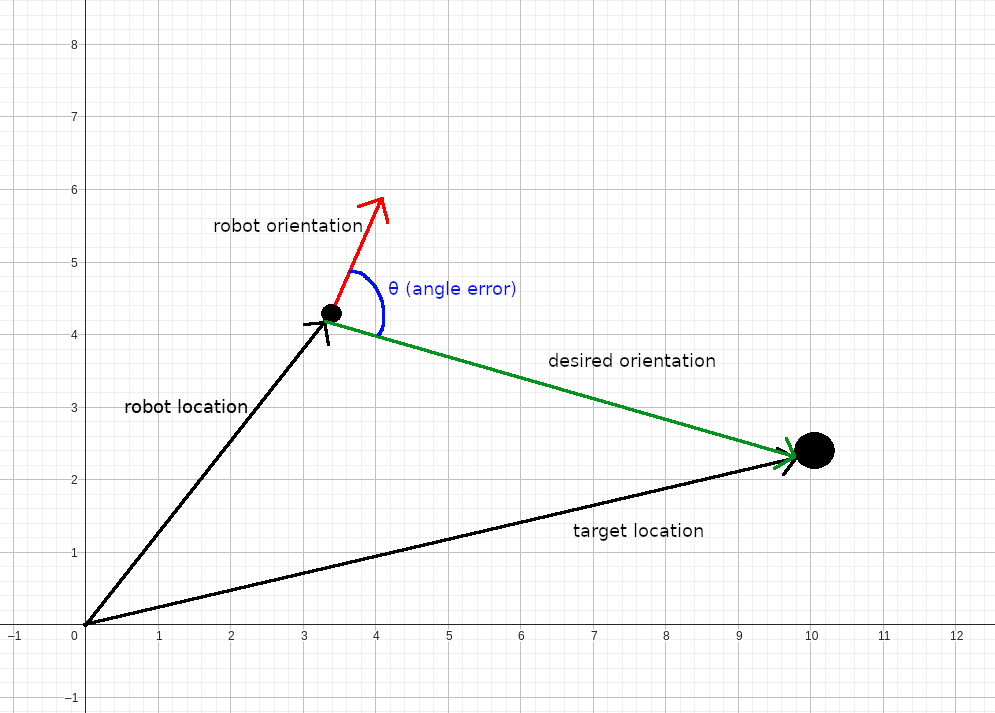

Desired behavior
- The robot goes to the approximate given location of the group of people
- Begins to follow a square spiral path.
- Meanwhile, tries to detect people with the camera facing down
- When all people are detected, returns to the boat
Approximate location of people
We are given the GPS coordinates locations of the boat an the survivors.
- Safety boat: 40º16'48.2" N, 3º49'03.5" W
- Survivors: 40º16'47.23" N, 3º49'01.78" W
- Safety boat: 430532m E, 4459132m N
- Survivors: 430492m E, 4459162m N
Square spiral path
There are two parts that take care of this: global navigation and local navigation
Global navigation
Generates a list with coordinates that needs to be followed. This coordinates are the vertices of the squares that form the spiral:
Local navigation
This controller works with the difference between the angle of the robot and the desired angle. If it is greater than a certain value, only turns to the goal. Otherwise, goes forward.
angle error calculation
The initial situation is the following:

I need the vector going from the robot to the target, so I substract the robot location from the target location:
To calculate the angle, I use the dot product. By its definition:
Solving for θ:
As for the sign, is negative if the cross product is negative.
People detection
For this I use Haar feature-based cascade classifiers from opencv to detect faces. This algorithm won't work if the face is not in a vertical position, so I rotate the image as necessary.

People position
The central pixels of the image corresponds to the coordinates position of the drone, so I use this to get people's coordinates. To do that, the image that I feed to the face detection function is a center cutout: